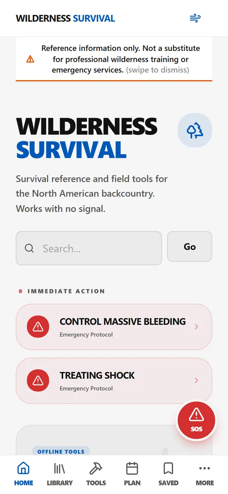
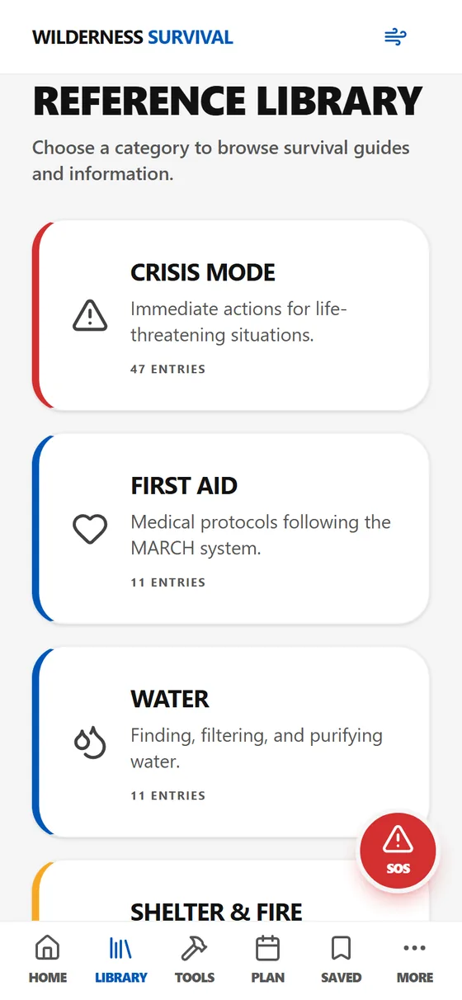
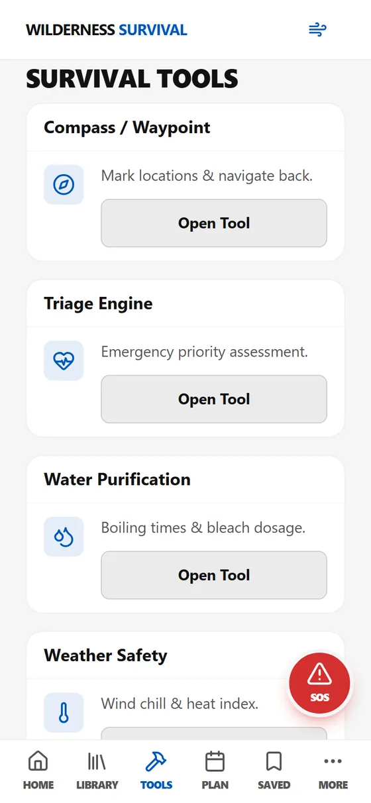

Wilderness Survival
An offline-first survival reference and set of field tools. The whole corpus ships inside the app, so nothing in it needs a connection. Live on the App Store as Wilderness Survival Companion.
The problem
Wilderness reference information is worth the least at exactly the moment you need it most, because that is usually somewhere with no signal.
What I built
A survival reference drawn from US Army FM 21-76 and federal sources including CDC, EPA, NOAA, and the National Weather Service, with environmental calculators and plant identification. Emergency protocols sit on the home screen, one tap away.
Screens



Captured from the web build.
How it works
React and TypeScript as a progressive web app, with the reference content stored in IndexedDB behind a Workbox service worker, wrapped for iOS. The content is sourced and attributed rather than written by me, because survival guidance is not a place to improvise.
Where it stands
Live on the App Store as Wilderness Survival Companion since March 2026; the current version is 1.8.0.